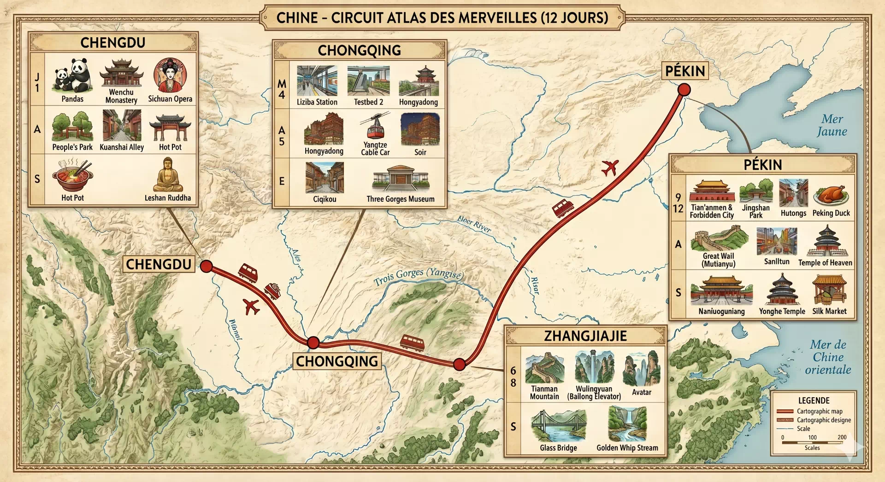

Douze jours dans l'Empire du Milieu
Du Sichuan brumeux aux ruelles verticales de Chongqing, des pics d'Avatar du Hunan jusqu'aux remparts impériaux de Pékin — chronique d'un voyage entre patrimoine millénaire et démesure contemporaine.

On ne pénètre pas la Chine, on y est précipité. Quatre villes, douze jours, deux mille quatre cents kilomètres de rails et d'arcs aériens : un itinéraire qui tient moins du circuit organisé que d'une lecture verticale du pays. Chengdu pour la lenteur des salons de thé, Chongqing pour le vertige cyberpunk, Zhangjiajie pour ses pics de grès qui défient la perspective, Pékin pour clore le voyage par l'Histoire, mille ans condensés sur une cour pavée.
Cliquez une étape pour ouvrir le carnet détaillé
Ville
indique où on est censé le manger sur l'itinéraire ;
signale mes sélections personnelles.
I. À Chengdu — le temple de l'épice
-
★
Chengdu
Sichuan Hot Pot
L'expérience ultime : un bouillon pimenté (ou moitié-moitié) où l'on cuit soi-même viandes, abats et légumes.
-
★
Chengdu
Mapo tofu
Tofu tendre dans une sauce pimentée et poivrée au bœuf haché — le classique absolu du mála.
-
★
Chengdu
Porc double-cuit
Tranches de poitrine de porc sautées deux fois avec poireau chinois et pâte de soja fermentée.
-
★
Chengdu
Poulet Kung Pao
Dés de poulet sautés avec cacahuètes et piments séchés — équilibre parfait du sucré, salé, vinaigré, piquant.
-
Chengdu
Nouilles Dan Dan
Nouilles au sésame, porc haché épicé et huile de piment, à mélanger vivement.
II. À Chongqing — le feu et la street food
-
★
Chongqing
Chongqing Xiaomian
Nouilles de blé dans un bouillon riche et très épicé — souvent dégustées au petit-déjeuner.
-
★
Chongqing
Mao Xue Wang
Ragoût de sang de canard caillé, tripes et légumes dans un bouillon rouge intense — pour les aventuriers.
-
★
Chongqing
Street food · Minxin Jiayuan
Brochettes grillées shaokao, galettes farcies à la viande et tofu puant — la nuit gourmande du marché de Minxin Jiayuan.
III. À Zhangjiajie — la cuisine de montagne
-
★
Zhangjiajie
San Xia Guo
Plat traditionnel de l'ethnie Tujia : ragoût combinant porc, tripes et bœuf, mijoté avec des légumes de montagne.
-
★
Zhangjiajie
Poulet aux herbes de montagne
Soupe de poulet fermier infusée aux racines et plantes du Wulingyuan — saine et parfumée, idéale après une randonnée.
IV. À Pékin — la cuisine impériale
-
★
Pékin
Canard laqué
Peau croustillante saupoudrée de sucre, chair fondante enroulée dans de fines crêpes avec oignon vert et sauce hoisin.
-
★
Pékin
Jiaozi
Les fameux raviolis chinois en croissant, garnis de porc et ciboulette — à Pékin, on les préfère bouillis ou à la vapeur.
-
★
Pékin
Zha Jiang Mian
Nouilles épaisses nappées d'une sauce sombre au porc haché et soja fermenté, juliennes de concombre — l'âme de Pékin.
-
Pékin
Jianbing
Crêpe de blé sur plaque chaude, œuf, sauce hoisin, coriandre — le petit-déj' des rues.
V. Autres classiques — hors itinéraire
-
★
Wuhan
Re Gan Mian
Nouilles épaisses au sésame, sauce de soja vinaigrée et oignon vert — le petit-déjeuner emblématique de Wuhan.
-
★
Wuhan
Lu Rou Fan
Riz blanc nappé d'une sauce onctueuse de porc gras mijoté longuement dans la soja-anis étoilé — réconfort en bol.
-
Shanghai
Xiaolongbao
Raviolis vapeur à la pâte fine, garnis de porc et d'un bouillon brûlant.
-
Canton
Dim sum
Petites bouchées vapeur ou frites, servies en cascade le matin avec du thé.
-
Jiangsu
Riz de Yangzhou
Le « riz cantonais » d'origine : œuf, jambon, crevettes, petits pois, parfumé au wok.
-
Nord
Baozi
Brioches vapeur moelleuses, fourrées au porc, aux légumes ou à la pâte de haricot rouge.
-
Canton
Porc aigre-doux
Morceaux de porc frits enrobés d'une sauce rubis vinaigre-sucre-ananas.
-
Canton
Wonton
Raviolis fins en bouillon clair, garnis de crevettes ou de porc — réconfort instantané.
Quatre engins, quatre tempos. De la longue marche atmosphérique au glissement feutré du Fuxing, voici comment se déplace ce voyage.
-
Long-courrier
Avion international · Air China
- Vitesse ≈ 900 km/h
- Durée 11 h Paris–Pékin (vol direct)
- Flotte Boeing 777-300ER · A350-900 · 787-9
Compagnie nationale chinoise, membre Star Alliance. Vol direct Paris-CDG → Pékin Capital. Décalage horaire : +6 h l'été, +7 h l'hiver. Pas d'escale technique.
-
Court-courrier
Avion national
- Vitesse ≈ 800 km/h
- Durée 2–3 h entre métropoles
- Tarifs ~ 60–180 € selon saison
Réseau dense (China Eastern, China Southern, Hainan, Spring, Sichuan Airlines). Retards fréquents — préférer le rail si possible sous 1 500 km.
-
Haute vitesse
TGV chinois · Fuxing
- Vitesse 350 km/h
- Réseau 45 000 km — le plus grand au monde
- Classes Business · Première · Seconde
Les lignes G et D (« gāosù »). Confort aérien, ponctualité de banque suisse, sécurité aéroport. Réservation via 12306 ou Trip.com.
-
Classique
Train standard · K / Z
- Vitesse 120–160 km/h
- Couchage « Hard sleeper » 硬卧 / « Soft sleeper » 软卧
- Idéal longues distances nocturnes, petits budgets
Lignes K (rapide) et Z (direct nuit). L'âme du voyage chinois — couloirs animés, thermos d'eau chaude, nouilles instantanées et conversations imprévues.
Huit essentiels à connaître avant l'embarquement — visa, paiements, applis, vêtements, ponctualité de l'imprévu. La Chine se prépare ; elle se mérite.
Visa & passeport
Visa touristique L obligatoire pour les Français (15 jours sans visa depuis 2024 pour court séjour, à vérifier au moment du départ). Passeport valide 6 mois après le retour, deux pages vierges. Demande à l'ambassade ou CVASC, 4–7 jours ouvrés.
Paiements — l'écosystème Alipay / WeChat
La Chine est cashless : tout passe par QR code. Installer Alipay ET WeChat Pay avant le départ, lier sa carte Visa/MC. Prévoir 500 € en yuans cash de secours — utile aux taxis ruraux et petits commerçants.
Internet & VPN
Google, WhatsApp, Instagram, Facebook, Netflix, The New York Times — tous bloqués par le Great Firewall. Installer un VPN avant l'arrivée (Astrill, ExpressVPN, NordVPN). Sinon : carte eSIM internationale qui by-pass le pare-feu.
Applis indispensables
Trip.com (trains, hôtels en anglais), DiDi (le Uber local), Amap ou Baidu Maps (Google Maps ne fonctionne pas), Pleco (dictionnaire chinois), Google Translate en mode hors-ligne avec pack chinois téléchargé.
Réservations critiques
Cité Interdite : 7 jours avant à minuit (heure de Pékin) sur le mini-app WeChat — billets épuisés en 30 secondes. Trains G : à réserver 14 jours à l'avance pour les hautes saisons (Golden Week, Nouvel An). Pandas à Chengdu : pré-réservation obligatoire la veille au soir.
Vêtements & saison
Été (juillet–août) : chaud et humide (32–38 °C à Chongqing). Vêtements légers, techniques séchage rapide. Poncho pliable (pluies tropicales soudaines). Chaussures de marche fermées pour Zhangjiajie. Une pièce couvrante (épaules) pour temples et palais.
Santé & eau
Eau du robinet non potable : bouteilles ou gourde filtrante. Vaccins à jour (DTP, hépatite A/B, ROR). Trousse : anti-diarrhéique, paracétamol, désinfectant main, masque (pollution Pékin en été modérée mais réelle). Assurance voyage indispensable — soins privés très chers.
Culture & étiquette
Le marchandage est attendu sur les marchés (commencer à 30 % du prix annoncé). Pas de pourboire au restaurant. Photo : demander avant pour les portraits. Files d'attente parfois inexistantes — se faire doubler n'a rien d'agressif. Sourire et patience sont vos meilleures armes diplomatiques.